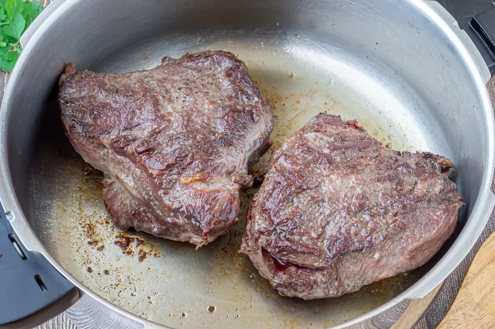
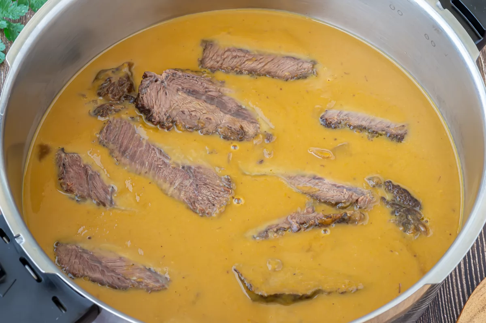

Carrileras de ternera

"La mejilla de res es un corte de carne que tarda mucho en
cocinarse y debe cocinarse a fuego lento porque contiene algo de
tejido conectivo. La cocción lenta puede hacer que la carne quede
muy tierna.
El sabor de la mejilla de res es generalmente positivo, ya que la
cocción lenta resalta el sabor de la carne y permite que los
condimentos penetren completamente en ella.
Este plato generalmente absorbe una variedad de especias,
vegetales y líquidos mientras hierve a fuego lento, creando un
sabor rico y profundo. "
Pasos
1
Preparación de ingredientes
2
Limpiar las carrilleras y sazonar ambos lados con sal y pimienta. Luego ve a manipular las verduras y déjalas enfriar un rato.
3
Pica finamente la cebolla, el ajo y la zanahoria para que luego sea más fácil molerlos.

4
Ahora que ya lo tenemos todo listo, ponemos a calentar 4 cucharadas de aceite en una olla. Una vez que el aceite esté bien caliente, ponemos los carnes.
5
Cuando tengamos la carne dorada, la retiramos de la olla y, en el mismo aceite, añadimos las verduras. Sofreímos a fuego medio hasta que estén bien pochadas. Luego, añadimos el ajo, y rehogamos un minuto más.
6
Acto seguido, volvemos a meter las carrilleras en la olla y añadimos 200 ml de vino. Dejamos cocinar a fuego medio-alto por un par de minutos para que el alcohol se evapore.
7
Cubrimos ahora con 400 ml de caldo de carne. Tapamos la olla y dejamos cocer unos 1 hora y 1 hora y 30 minutos si es una olla tradicional.
8
Una vez que tengamos la carne ya cocida y tierna, la sacamos de la olla y la cortamos en rebanadas gruesas. Esto facilitará que cada trozo de carne se mezcle mejor con la salsa.
9
Metemos la salsa con las verduras en el vaso de la batidora y trituramos hasta que tenga una textura suave y homogénea.

10
Por último, devolvemos las carrilleras a la sartén con la salsa, probamos y añadimos la sal y pimienta adecuada. Luego cocine lentamente durante decenas de minutos.
11
Producto terminado
Tips:Si no tienes caldo utiliza agua con laurel, perejil y tomillo.